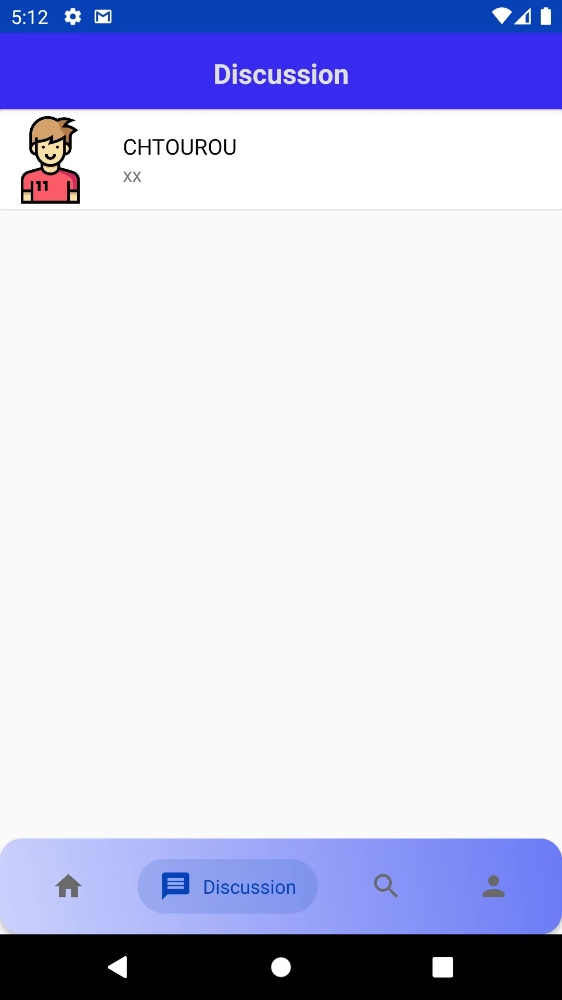
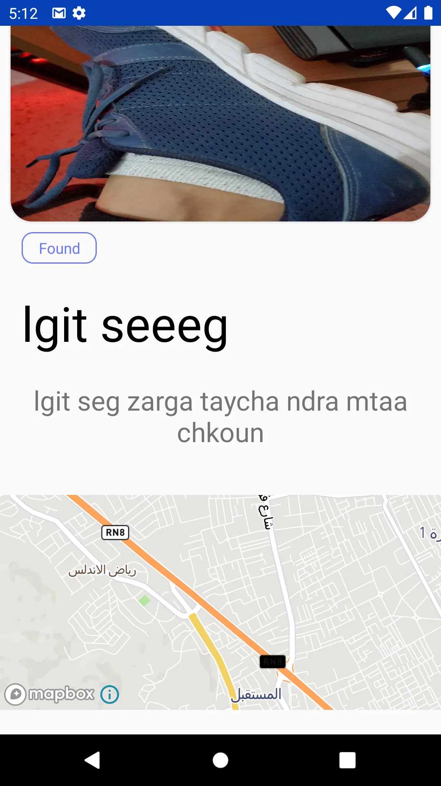
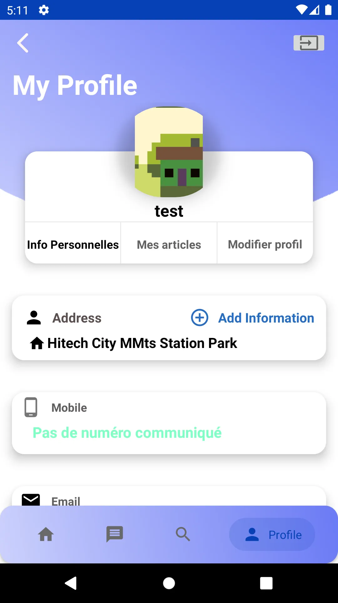
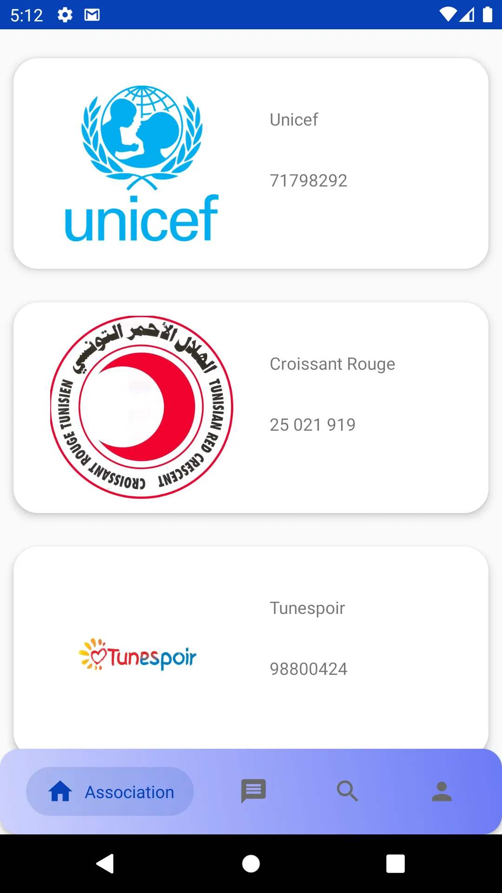
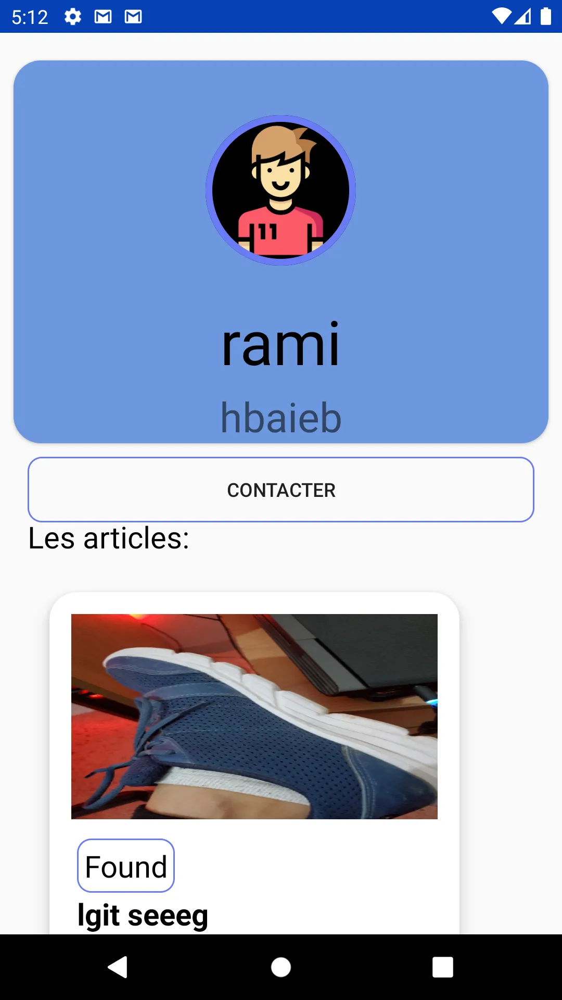
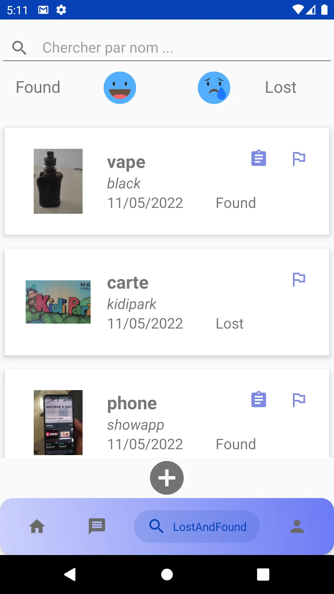

Lost & Found
Application mobile multi-plateforme pour retrouver vos objets perdus ou signaler ceux trouvés. Disponible sur iOS, Android et Huawei AppGallery.
Résumé
Lost & Found aide les utilisateurs à signaler et retrouver des objets perdus. L'app intègre un système de sécurité avec question secrète, et propose une fonctionnalité de don caritatif lorsque l'objet reste introuvable.
Fonctionnalités clés
- Signalement d'objet perdu/trouvé
- Recherche filtrée et géolocalisation
- Question secrète de sécurité
- Option de don caritatif
- Disponible iOS, Android et Huawei
Technologies
Année
2022
Architecture
Architecture multi-plateforme avec une API Node.js partagée entre les clients iOS et Android.
Application Mobile
Interface intuitive pour signaler et retrouver des objets perdus sur iOS et Android.






